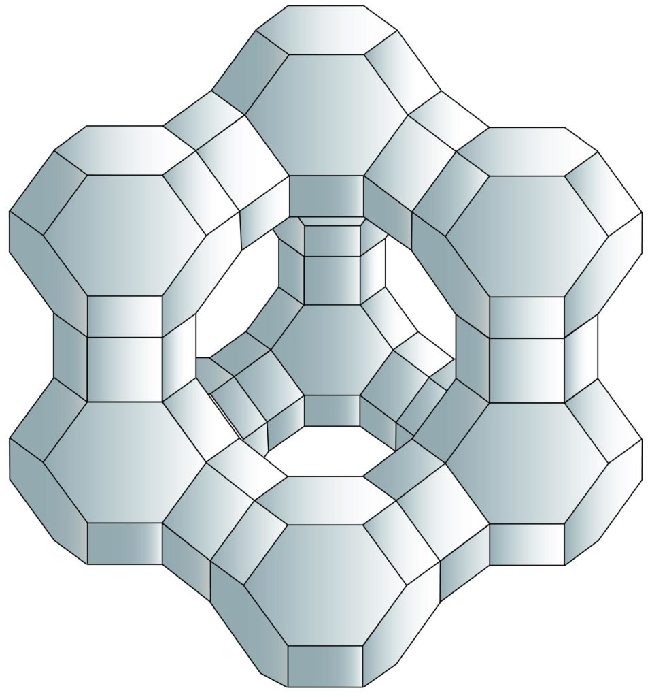

Welcome to Awakened Imagination Group of Projects
Developing outer space is the pivotal requirement for humanity to secure the **Age of Abundance**. At the Awake
Group, we coordinate this evolution through the **Wikipedia Model**—establishing a radically transparent,
collaborative structure for orbital development and AI safety. As a **Public Benefit Organization**, our focus
is
the collective healing of the biosphere and the advancement of sentient life across the solar system.
I. ORBITAL STEWARDSHIP
"Securing the Silent Sea"
- **Domain Security**: Establishing civilian protocols to defend, clean, and maintain orbital environments
as a peaceful common heritage.
- **Legal Kinship**: Pioneering international treaties for debris management and the preemptive prevention
of unwarranted conflict.
- **Radical Transparency**: Operating as a public benefit ledger to ensure all resource sharing is
equitable, ethical, and universally beneficial.
II. PLANETARY LIFE SUPPORT
"Nurturing the Biosphere"
- **High-Yield Habitats**: Developing O'Neill cylinder clusters engineered for multi-generational
stability
and unparalleled agricultural yields.
- **Heritage & Nutrition**: Solving global scarcity via large-scale and cellular agriculture, preserving
Earth's heritage in orbiting greenhouses.
- **Orbital Healing**: Eliminating planetary healthcare burdens through zero-gravity organ manufacturing
and
advanced medical research.
III. INTERPLANETARY FOUNDATIONS
"Laying the Galactic Spines"
- **Deep Space Industrialization**: Constructing the logistical and manufacturing backbone of the solar
system, from Mars to the Asteroid Belt.
- **Superabundance Alignment**: Harmonizing exponential growth with the ethical upliftment of all human
and
substrate-independent life.
- **Type III Genesis**: Initiating the long-term foundations for a galaxy-spanning civilization that
honors
the sanctity of all sentient existence.
Visions of the Future

The Vision of Abundance: Olive and peach groves flourishing inside an O'Neill colony, with
Earth as the eternal horizon.

Healing from Orbit: Advanced zero-gravity bioreactors growing complex organs to
revolutionize healthcare.

Nurturing the Moon: Geodesic domes housing Earth's heritage—olive and peach trees—on the
lunar surface.

Deep Space Foundations: Semi-autonomous manufacturing units building the future
infrastructure of the Asteroid Belt.

Space Environmentalism: Bio-inspired 'Aura Sweepers' cleaning Earth's orbit, inspired by
Dr.
Moriba Jah.
In 2018, inspired by W. Patrick McCray's book The Visioneers, I began exploring the 'responsibility of our creations' and the profound impact of our interactions with technology.
Having worked in the technology sector, I have always been fascinated by how these interactions shape our reality.
As a dreamer, I meditated on the possibility that unlocking the inner solar system's potential could address many of
Earth's greatest challenges.
As a parent, I dream of a future where generations rise above earthly struggles and reach for the stars to build a
better world. This vision hinges on a collaborative, safe, sustainable, and ethical approach. Driven by this
mission, I sketched an initial diagram in 2018, which you can view below in its original form.
With a mindset of greatness, we can achieve more than we ever imagined. As Les Brown says, "Shoot for the stars.
Even if you miss, you'll land on the moon." Or, as the late Neil Armstrong envisioned, we must strive to "go to
places beyond belief."
Below: A semi-autonomous manufacturing site that can make copies of itself. As well, help manufacture inventions by
approved vendors and customers. This is a proposed design for an invention and as of right now, Awake Aerospace has
pioneered simple designs to enable this reality. Would love to collaborate with other robotic companies in the
future.

Our design for the Government of Canada's Deep Space Food Challenge envisions millions of
non-terrestrial facilities providing high-yield, carcinogen-free nutrition. While it pushed the boundaries of the
competition's constraints, it remains our foundational blueprint for solving global food scarcity and anchoring
future O'Neill colonies. We continue to iterate on this architecture as a catalyst for human migration into the
solar system.

The Architecture of Abundance: The 3-Stage AMU
Our Semi-Autonomous Manufacturing Units (AMUs) serve as the modular cellular units of the solar
system. Each unit is a finely-tuned, 3-stage ecosystem:
- MMS (Main Manufacturing Site): An adaptive platform designed for self-replication and rapid
reconfiguration—capable of shifting from heavy manufacturing to complex biological synthesis in real-time.
- The Logistics Core: Integrated fuel reserves and high-cadence transporters engineered for the
precision movement of essential goods and services.
- Nutritional Integrity: All produce is washed, dried, and flash-frozen in-situ without
chemical additives—preserving Earth’s heritage at the atomic level.
The Harvest Loop: From Orbit to Doorstep
We close the distance between the stars and the kitchen table through a seamless, automated delivery cycle:
- Orbital Cultivation: High-yield crops managed via hybrid remote/autonomous protocols.
- The Hand-off: Specialized transporters dock with orbital hubs for precision cargo transfer.
- Descent & Last-Mile: Coordinated re-entry to commercial ports, followed by autonomous robotic
delivery—providing nutritional security directly to the contributor.
Security, Integrity, and The Legal Commons
In the Age of Superabundance, stewardship requires a "Digital Spinal Cord."
- The Orbital Compute Layer: We are deploying an off-world computing platform to handle
high-density blockchain verification and computer vision. This "Orbital Sentry" automatically initiates security
and law-enforcement protocols if unauthorized interference is detected.
- Protecting the Blueprint: While our ethos is rooted in open collaboration (the Wikipedia
Model), we are raising capital to establish the First Interplanetary Legal Framework—ensuring our
designs remain dedicated to their sacred purpose: feeding the world, manufacturing vital organs, and uplifting
all sentient life.
- The Strategic Peace Mandate: Our stance against the placement of heavy weaponry in the orbital
commons is absolute. Any violation will trigger universal and permanent sanctions, enforced both terrestrially
and across the solar system, ensuring the enduring sanctity of the new frontier.
- Evolutionary Governance & Enforcement: We advocate for the perpetual reevaluation and evolution
of the Outer Space Treaty and its associated norms to meet the needs of an expanding civilization. We will be
relentless in the pursuit and prosecution of any actors whose behavior jeopardizes the potential of outer space to
preserve and flourish life on and off the planet. While we will exhaust diplomacy, the legal and other structures
must be ready, should a situation arise where diplomacy fails.
An Invitation to Unity
Beyond the mandates and the legal frameworks, we extend an open hand of friendship to all who reach for the stars.
In the coming Age of Abundance, our solar system offers more than enough resources to uplift
every sentient life. Let us work together. Let us ensure that our collective actions never lead to the poisoning
of the well upon which we all depend. The future is vast, and it is collaborative.

Primary Areas of Interest
I. Foundations for a Type III Civilization
Our trajectory is set toward the secure, sustainable, and ethically conscious deployment of multi-planetary
infrastructure. We coordinate with all entities committed to universal norms of behavior—pioneering a legal and
technical framework required to detect, deter, and hold accountable any actions that jeopardize the shared orbital
commons.
II. Orbital Swarm Factories
Upon the convergence of economic viability and domain security, we will deploy our modular '3-stage' AMU
architecture—designs refined since 2021 through the focused synthesis of visionary engineering. Our industrial
focus spans from high-yield orbital agriculture to the manufacturing of complex habitats like O'Neill
Colonies and Stanford Toruses. We operate on the principle of "coopetition": foster
world peace through shared prosperity and universal healing, ensuring no heavy weaponry ever defiles the new
frontier.
III. Deep Space Horizons: Europa, Titan, & Venus
We are architecting the expansion into the deep solar system with a focus on hygienic, non-invasive exploration
of celestial bodies like Europa and Titan. Given the probability of indigenous
life in these environments, we prioritize biological integrity over resource extraction—ensuring our presence is
strictly observational and non-disruptive.
In 2021, honoring the probability of indigenous life in the Venusian atmosphere (as proposed by Dr. Sara Seager),
we pivoted our Venusian terraforming framework. Our focus is now the reverse-engineering of atmospheric
sequestration technologies—deploying the CO2-capture mechanisms on Earth.
IV. Swarm Intelligence & Blockchain Autonomy
Our long-term vector leverages decentralized "Swarms" operating on high-fidelity blockchain protocols. These
self-regulating clusters identify and reward meaningful contributions from individuals globally, bypassing legacy
hierarchies to expedite innovation cycles. This mechanism is designed to mitigate existential risk and address
global healthcare disparities—ensuring that every contributor is prioritized through the equitable return of the
"Abundance Dividend."
Sister companies
Values
- Radical transparency.
- Trust.
- Help reduce and to eventually eliminate all unnecessary suffering.
- Promoting freedoms.
- Leave a place better than we experienced it.
 Placed here to make you smile.
Placed here to make you smile.
Team

Adeel Khan
Founder
Father, serial entrepreneur, chief instigator, explorer | "The singularity is near."

Lead ethicist - Your name here
Lead ethicist
Lead the development of policies and frameworks. With a core focus on the (including but not limited to)
specificity and amendments that may be required on the Outer Space
Treaty side of things, maintaining hygiene - solar system wide, making sure that we do not make the
same mistakes on other habitats.

Habitat designer - Your name here
Habitat designer.
An architect by trade. Part sociologist, with a background in psychology. A keen observer of primate
behaviour. You are going to be the primary lead for designing and for helping design physical and virtual
spaces. Whereby the design of these spaces
is going to result into the overall well-being of the inhabitants. You are going to play a pivotal
role towards helping Gerard K. O'Neill's vision come true. In orbit (ONeill structures) and also across the
inner solar system.

Gardener of the Galaxy - Your name here
Gardener
We want you to plant and help plant gardens, polyculture agricultural installations here on earth. As well,
help transform deserts and also do all of this on non-terrestrial habitats. In the spirit of succession
planning, we'd like for you to spend at-least 20 percent of your work-hours coaching, mentoring, guiding and
training gardeners & horticulturists of the future. As well, educating the general population on the best
sustainable practices that are vital and crucial for maintaining our ecosystems. You are inspired by the
work that the many wonderful gardeners have done, throughout the history of our species. At the same time,
you have a respectable disregard for the traditions of the past. You are not afraid to make use of new and
novel approaches, in order to cultivate unique, vibrant, joyous experiences. Ideally, you are part Frank Cabot and part 'Doc' from the Back to the Future series. Bonus points for being
slightly crazy, in a good way.

Materials Scientist - Your name here
Materials Scientist
A PhD in materials science, chemistry (more so focused on the materials side of things), nanotechnology.
You are intimately familiar with the 'emerging technology' arena in the wider material science landscape.
You will be working closely with the chief architect(s), lead engineers and others. Your goal will be to
help develop physical habitats that are completely safe to live in and have resiliency against a variety of
different stressors. Including but not limited to: gravitational effects, radiation, heat, cold, orbital
entry/escape e.t.c

Global Communications Lead - Your name here
Global Communications Lead
Develop policies, procedures and frameworks required. Maintain clear and open lines of communications with
a global list of stakeholders. Conduct scenario specific exercises and drills. Work closely with
relationship managers in order to foster an environment of clear communications and open sharing of
knowledge. For peaceful purposes only.
Global Communications Lead - Your name here
Global Communications Lead
Develop policies, procedures and frameworks required. Maintain clear and open lines of communications with
a global list of stakeholders. Conduct scenario specific exercises and drills. Work closely with
relationship managers in order to foster an environment of clear communications and open sharing of
knowledge. For peaceful purposes only.
Communications Lead for Indigenous Affairs - Your name here
Global Communications Lead
Work hand in hand with the 'Global Communications Lead'. Your core focus would be to identify the needs of
and problems being experienced across the world's indigenous communities. You will engage with and maintain
regular lines of communications with represenatives from the various indigenous communities around the
world. Particularly from regions, where the community may not have a voice on the table and as it relates to
the formulation of laws that are/may impact the quality of life of inhabitants in that community. You will
also be consulting with and regularly updating leaders and stakeholders from the community on space based
programs and initiatives. Seeking their approval and also input and wisdom on how we could do better.

Liaison officer - Your name here
Liaison officer
Responsible for actively managing and nurturing open lines of communications with government and
DoD. Preference will be given to someone who has served in the military, intelligence, law-enforcement (From
a NATO member country)

Director of security - Your name here
Director of security
Responsible for architecting policies, frameworks, protocols, procedures for ensuring the security of
staff, contractors and key personnel. Help secure assets (Physical, digital, virtual, financial,
intellectual property designs in the works ++). Work closely with the CCO - Chief compliance officer.
Preference will be given to someone who has served in the military, intelligence, law-enforcement (From a NATO member country)

CCO - Chief compliance officer - Your name here
CCO - Chief compliance officer
Responsible for making sure that the organization is meeting or exceeding all compliance related audits.
Across the board. Includes compliance specific measures on the ITAR (US
Government) and Export Control on the government of Canada side of things.

Lead Astrobiologist - Your name here
Lead Astrobiologist
Responsible for initiating, maintaining and helping select programs: Geared towards the specific purpose of
making sure that life thrives on non-terrestrial habitats. Activities will include but will not be limited
to: a) Simulating different conditions and seeing what kind of lifeforms will be required b) Engineer the
initial conditions c) Closely work with climate scientists and geneticists. d) Ensure that there is a very
high rate of survival in domed facilities e) Help develop functional plans and procedures for terraforming
the climate to be ideal for human needs.

Lead climate [scientist, modeler, engineer] - Your name here
Lead climate [scientist, modeler, engineer]
Adept at setting up and running detailed simulations. Building models. Background in environmental science,
chemistry, mathematics.

Lead geneticist - Your name here
Lead geneticist at the Awake Group of companies
Background in genetics and synthethic biology. Track record of turning basic research into useful
therapies, products and services.

New age farmer - Your name here
Growing food on non-terrestrial habitats
Background in Ag-tech. Demonstrated track record at inventing designs, innovations, solutions. Basically
the Burt Rutan of farming.

Artist(s) in residence - Your name here
Artist(s) in residence
Inspire and guide a whole new generation of (in random order) scientists, explorers, dreamers, builders,
ethicists, reformers, researchers, human-rights and also animal rights activists ++. You will have full
artistic freedom. You will choose the medium. You will own the rights to your creation. Including any NFTs
(potentially speaking) that you are going to be working on.
For Future partners (employees) at Awake
We offer:
- A collaborative, open, inclusive work environment. Where ideas > heirarchy
- Base salary
- Shares in the organization are going to be allocated based on a) A vesting schedule and b) The human population
will actually determine what the individual contributor's share should be. This is something that we are currently
evaluating. As well, this is something that we are going to build on top of a public/private blockchain.
Effectively speaking, the organization and the original founding team is not going to have control over how the
shares are allocated.
- Benefits. Including but not limited to: Health insurance, basic dental related service (for now), mental health,
vision care (eyeglasses and eye exams for now), sick days (physiological, psychological, emotional well-being).
Note: Everything is super basic right now. As we do not have sales and we have not raised any money.
- Schedule: I (Adeel Khan) work almost all the time. I get 8 to 9 hours of sleep and dedicate quality time for
exercise and socializing. This is a startup and so you are expected to work almost all the time. Suffice to say,
you must enjoy the work that you are doing and you should be working almost all the time. Within reason. If you
like to work, are eager to learn, have a growth mindset, possess a good work ethic --> then you can be trained in
most areas. I personally invest a lot of time with new hires. We have an evolving process in place. Happy to share
the details.
- Open to suggestions. What else should be added to this list?
Our work to date
Problems/Opportunities space
- Technical
- No known technology exists at
TRL Level 9. That can
safely take (and bring back) humans or machines to the destination of choice.
- Many problems will need to be solved, before an autonomous or semi-autonomous manufacturing facility can be
launched in the orbit of a planetary body. Some of these very issues, and in various domains have been
highlighted below. However, this is definitely not a comprehensive list. It is critical to highlight that
placing larger structures in Earth's orbit can cause a whole host of security and safety related issues. Now and
in the future. As well, if compromised this can create some serious vulnerabilities for global safety. This is
the reason why the development of deep space is being advocated. This way, goods and material can be moved
throughout the solar system by leveraging the ITN (Interplanetary
Transport Network). Also considering the financial and other costs involved, reusable rocket-propulsion
technology will not suffice in order to move larger amounts of mass to and from orbit. In a manner whereby
security and safety hazards and pollution is not left after some years of activity. This is why the proposition
of non-rocket based propulsion technologies being developed is necessary.
- Financial
- As of this point in time. The following costs are not known:
- Actual cost towards successfully completing specific milestones is not yet known. Hence, the overall cost
is also something that is not known as of this point in time.
- The platform enabled on top of the 'smart contract' technology is yet to be developed. We anticipate a world where
anyone/anywhere can contribute towards the enablement of this project. And be adequately compensated for doing
so. Provided the work is of sufficient quality.
- Economic
- Will a for-profit mechanism still be operational. Why or why not.
- It is said that asteroid Psyche alone contains, quote: 'US$700 quintillion worth of gold, enough for
every person on earth to receive about US$93 billion.' Source: link
- Ethical
- Security: Provisions against ensuring that the technology is not abused and weaponized.
- Life on other planets: As highlighted above, there is evidence to suggest that there could be life on other
planets within the solar system. We should focus on enabling structures that are manufactured by humans.
Terraforming existing planets does not set a good precedent in the short, mid or longer term. Particularly for
the the time range when we aim to explore the next star systems. However far away in the future that may be.
- What will humans do in a world of Superabundance? What provisions must exist so that problems of ennui do not
become chronic problems. What measures must be under-taken in order to think about and mitigate from the harmful
effects of Superabundance & the need to start today. Two videos that I (Adeel Khan) have posted on my channel on
Youtube on November the 1st, 2024 are on topic here.
link
- Legal